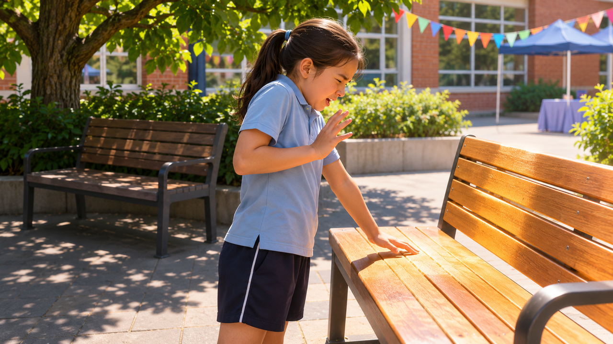

חימום וקירור
נוחות בימי חום וקור
הספסל לא זז. אז למה אי אפשר לשבת עליו?

יום פעילות בחצר
"איי, זה חם!" לין בת העשר משכה את ידה מהספסל בחצר בית הספר. רק לפני שעה ישבה עליו בנוחות. לקראת יום הספורט הוקמו בחצר שלוש תחנות המתנה, וכולן נראות כמעט אותו דבר. עכשיו אחת מהן נמצאת בשמש, אחרת מוצלת ובשלישית מורגשת רוח חזקה.
הילדים מחליפים ביניהם דיווחים סותרים: "אצלי נעים", "אצלי לוהט", "אצלי קר בגלל הרוח". לין תוהה איך יכול להיות שבאותה חצר, באותה שעה, החוויה שונה כל כך.
התחנה שמשתנה
בשעות הבוקר השמש מגיעה רק לחלק מהחצר, אבל לקראת הצהריים הצל זז. הספסל שבו התלמידים ישבו בנוחות קודם לכן מתחיל להתחמם, אף שהתחנה לא הועברה למקום אחר.
לין שואלת את המדריכה איך ייתכן שאותו מקום מרגיש אחרת אחרי שעה. המדריכה מזכירה שהפעילות נמשכת לאורך היום ולכן תנאי ההמתנה אינם קבועים.
כשלין חוזרת לתחנה הראשונה היא רואה שני תלמידים מחפשים פס צל ליד הקיר. סימון הגיר מסמן בדיוק היכן עמדו הכיסאות בבוקר. "התחנה נשארה במקום", היא אומרת, "אבל הצל ברח".
היא שואלת את עצמה כיצד אפשר לתאר מקום שמחליף את התנאים שלו בלי שאיש מזיז אותו. העובדה שהשמש נראית באותו צד של השמים לאורך הפסקה קצרה לא מספרת מה יקרה שם בהמשך היום.
לא כל ילד מרגיש אותו דבר
חלק מהתלמידים הגיעו לתחנה אחרי ריצה וחלקם אחרי מנוחה. אחרים חובשים כובע או לובשים שכבה נוספת. לין מבינה שמידת הנוחות תלויה גם במה שקרה לפני שהתלמידים הגיעו.
המורות דואגות להפסקות שתייה, צל ומנוחה בהתאם לכללי הבטיחות. המשימה של לין אינה להחליט מי יכול להישאר בשמש אלא להבין אילו תנאים גורמים לתחנות להיות שונות.
מה צריכה המדריכה לדעת
במהלך היום המדריכה צריכה להחליט היכן להמתין עם הקבוצה ומתי יש לשנות את סדר התחנות. אין לה אפשרות לעמוד בכל אזור באותה דקה, וההרגשה של אדם אחד אינה בהכרח מתארת את כל המתחם.
היא הייתה רוצה מידע ברור על האזורים שמתחממים, על מקומות שיש בהם רוח חזקה ועל השעות שבהן התנאים משתנים.
חום וקור הם לא אותו דבר
בימים קרים, המגרש הפתוח יכול להרגיש קר במיוחד כשהרוח מתחזקת. בימים חמים, השמש והמשטחים החמים הופכים לחלק מהקושי. אותה תחנה אינה דורשת תמיד אותה התייחסות.
לין מבינה שאין טעם לבחור פתרון לפני שמבינים אם הבעיה היא בשמש, בזרימת האוויר, בהמתנה ארוכה או בשילוב שלהם.
לין מציעה להשוות בין שתי התחנות, אבל אז המדריכה מצביעה על פרט נוסף: בתחנה אחת עומדים ילדים אחרי ריצה, ובשנייה יושבים ילדים שזה עתה סיימו משחק חשיבה. אפילו אם האוויר דומה, החוויה שלהם אינה בהכרח זהה.
היא מנסה לחשוב מה אפשר לתאר במספרים ומה צריך לשאול את המשתמשים עצמם. זהו קושי חדש: שני סוגי מידע חשובים, אבל הם אינם מספרים בדיוק את אותו סיפור. כיצד יוכלו המדריכים להחליט בלי להסתמך על אדם אחד בלבד?
הפרטים שעדיין חסרים
ידוע היכן נמצאות התחנות ומתי האירוע מתקיים. לא ידוע מה הטמפרטורה בכל נקודה, כמה זמן נמשכת ההמתנה ואם השינויים חוזרים בשעות קבועות.
לין מבקשת להבחין בין תחושה סובייקטיבית לבין תנאים שאפשר לתעד ולהשוות. היא מציעה לשים לב גם לצל, לרוח ולמשך החשיפה, בלי לבצע ניסויים שעלולים לסכן תלמידים.
לפני שממציאים
לין רוצה לעזור למדריכים לתכנן יום פעילות נעים ובטוח יותר, אך היא יודעת שנוחות אינה נמדדת רק במספר אחד. צריך להבין מי משתמש במתחם, כמה זמן ממתינים ובאילו שעות.
מה הייתם בודקים תחילה? אילו נתונים כדאי להשוות בין התחנות? ואיך תדעו שמידע שנאסף בשעה אחת עדיין שימושי בשעה אחרת?
רמז מעולם החלל
חלליות משתמשות בחומרים, במשטחים ובמערכות שמסייעים לשלוט במעבר חום בתנאים משתנים. חשבו על ההבדל בין מדידת טמפרטורה לבין הבנת התנאים שגורמים לה להשתנות.
אחרי הקריאה — בדף הצוות
שוחחו בצוות וענו על סמך המידע שבכתבה. אם חסר מידע, רשמו שאלה להמשך.
- למי אתם רוצים לעזור בסיפור?
- מה הוא מנסה לעשות ומה מקשה עליו?
- מה הוא צריך להיות מסוגל לעשות?
- מה עוד תרצו לברר לפני שתפתחו רעיונות?